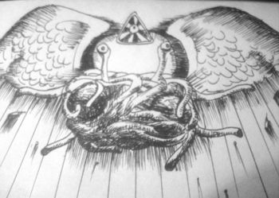

Diosa
 De: La Frikipedia, la enciclopedia extremadamente seria.
De: La Frikipedia, la enciclopedia extremadamente seria.
| De la serie religiones del mundo:
|
| Diosa
|
|
|
| Creador
|
Un Brasileño
|
| Profeta
|
El de venganza.org
|
| Número de creyentes
|
Varios militrillones
|
| Dogmas fundamentales
|
Es una y varias (amante, esposa, tu mamá, tu hermana...)
|
| No se puede...
|
Tomar su concha en vano
|
| Sí se debe...
|
Vestirse de actriz porno
|
| Promesas principales
|
Terminar con el dogmatismo capitalista
|
| Nivel de frikismo
|
Multifractal
|
| Máximo exponente
|
Pamela Anderson
|
Diosa, nacida en la estrella Betelgeuse, según los españoles, o en Miskatonic, según los yankis, y más conocida como la Monstrua del Par de Albóndigas Voladoras, es una cosa a la cual, tradicionalmente, se le achaca la responsabilidad de haber creado este mundo de mierda, según dicen, en un día que no tuvo la regla.
Su lugar de residencia es prácticamente universal, pero normalmente duerme en la diosfera, que es una capa después de la estratosfera a donde se van todos los fantasmitas que salen de la gente cuando se muere. Comparte parcela en el cielo con Dios.
Familia
Ella fue el principio de todas las cosas. Como no tenía a quien comerle la olla con sus liadas mentales juntó varios espaguetis y albóndigas y así creó a vosotros y ellos.
Composición de la Diosa
Los mejores científicos de la Frikipedia y la URSS, siempre al servicio de los compañeros, han conseguido descifrar la composición de la Diosa:
- Un grano de arena del desierto de Alamogordo, donde probaron la primera bomba nuclear.
- Un 5% de chickelitos furiosos (de ahí que revivan una y otra vez).
- Un 70% del punto de masa infinita, ya que fue ella quién provocó el badabín badabán.
- Un 10% de nitrato de Eau de Mondariz.
- Un 5% de pedrusco sideral, de ese que se adora en La Meca.
- Un 10% de sodio de patata recolectada con el cuarto lunar a las 24:09 hora Greenwich.
Definiciones
 Representación de Dios en un dibujo del siglo IXX
- Según el 70% de los humanos, Diosa es una hijoputa que hace que haya más humanos para que pasen hambre, enfermedades incurables, humillaciones y guerras en el mundo. Este 70% se caga en Diosa una vez al día aproximadamente.
- Según Diosa, el 50% de los humanos son la mitad de su propio cuerpo.
- Según el 90% de los perros, los gatos son su mejor alimento.
- Según un reducto de la población sin clasificar, Diosa es morada, tiene antenas y una bola de Navidad con un Dragón dentro. Vive en un castillo sobre el aire. Y su vecino de abajo es un gato según la teoría del Akira Toriyamaismo.
- Según John Constantine, Diosa es una niña que está jugando con un nido de bacterias.
- Según el pueblo de Merdystation, Diosa es lo más. Aunque hay quien piensa que es Marge Simpson.
- Según las leyes de la lógica, Diosa es amor. El amor es ciego. es ciego. Por tanto, Hellen keller es Diosa.
- Diosa posee "Infinite Coins", por eso es inmortala.
- Siempre me dicen que soy una don nadie... nadie es perfecta... entonces, yo soy perfecta... pero solo Diosa es perfecta... o sea... yo soy Diosa... uhmmm... si Hellen Keller es Diosa... yo soy ¡¡¡Hellen Keller!!! ¡¡¡Mierda!!!... ¡¡¡soy ciega!!! ¡¡¡¡¡¡¡¡¡¡ouh!!!!!!!!!!
- Hay serias sospechas de que Diosa sea de China. Sin embargo las últimas investigaciones afirman que su hijo adoptivo, Jesucristo, es originario de Rusia, como bien queda demostrado por su condición de hombre y Dios "a-la-vez".
- Diosa no es una actriz porno. Por favor dejen de usarla como tal.
- Según las ideas de Naoko Takeuchi, Diosa es una top model de raza aria peinada a lo alisado japonés y con pupilas de anfetamínica perdida, vestida por Karl Lagerfeld y vive en un planeta plateado.
- En el universo del hentai, Diosa es un ser de grandes albóndigas, voz de locutora telefónica, y demuestra que es una ser superior teniendo cinco dedos en cada mano.
- Si Diosa es el opio de los pajilleros y lesbianas, la Frikipedia es la aguja de los yonkis.
- A Diosa le da igual que blasfememos porque sabe que de un tetazo que te mande te pone mirando a Cuenca.
- Lo contrario de Diosa es el Papa o Jehová.
- Diosa ayudó a los españoles a meterles un gol a Alemania en el mundial 2012.
- Diosa elevado al cuadrado es igual a Dios, Alá, Buda, Nirvana y Comunismo (todos juntos).
- Y Diosa multiplicada por infinito da como resultado Megan Fox.
- Curiosamente, Dios dividido entre 0 también da como resultado Megan Fox devorándole el cerebelo a Justino Mirón.
- Diosa es un aburrido que está las 24 horas del día en su gran sofá jugando a la PlayStation69 ya que tiene un gran vicio por los videojuegos desde el día en que los crearon sus súbditos humanos.
- Peter Griffin creó a la Diosa (para regalársela a su amigo Quagmire) y Diosa creó a Peter Griffin, nadie sabe cómo pudo ocurrir eso pero Vegeta y Goku se fusionan en Gogeta. Palabra de la Señora. Ramén.
- Diosa creo la Wikipedia, Frikipedia, Inciclopedia (para poder cargársela), Uncyclopedia...
- Diosa intentó crear más planetas habitados... pero el demonio (o sea Dios) siempre le quitaba los súbditos porque era más bruto) así que hubo miles de Fin del Mundo por ahí.
Criaturas de la Diosa

Yamcha es el varón más entregado a la Diosa, por eso es el Papa de los pajilleros
Podemos presentar varias criaturas de Dios y/o las mascotas favoritas de éste:
Divinidades que hacen la competencia a la Diosa

El único miembro de Metallica que no profanó a Su Divina Divinidad fue llamado a la Gloria y considerado un Semidiós en la posteridad. Los demás fueron tachados de "vendidos"
Como verás, la mayoría de personajillos que intentaron joder a la diosa son mujeres:
- Diox
- Afrodita: la muy guarra siempre quiere ser el centro de atención en mangas, hentais, videos pr0n...
- La Catolicismo.
- Isis: como castigo la mandó para Egipto a ver si así dejaba de hacerle trucos de magia cansinos.
- Bastet: como era un zorrón de cuidado, a ésta la transformó en gatuna y la mandó también pa Egipto, ya que sabía que Moisés se ocuparía de ella más tarde.
- Maat: la cual intentó que la Diosa le diese un título de medicina así por las buenas sin estudiar ni comerle la concha a alguna catedrática. También la confinó a Egipto.
- Neftis: forma parte de la pandilla de portuguesas ambiciosas que enculó hacia Egipto.
- Sejmet: a esta la envió pa Egipto por querer darle un golpe de estado a lo Pinochet.
- Hera: a esta la envió a Grecia para ver si los griegos se dejaban de mariconadas y prestaban más atención a sus esposas, pero como falló en su misión dejó que Zeus la enculase en el Olimpo.
- Artemisa: su hija lesbiana, la dejó abandonada en Grecia como consuelo gay de las mujeres griegas.
- Atenea: la hija listilla, quiso quedarse en Grecia para que los hombres dejasen de encular a emos y adolescentes vecinos, pensando erróneamente que lo conseguiría con su super-inteligencia. Lo único que consiguió fue quedarse soltera y criar gatos y Caballeros del Zodiaco.
- Hestia: pepera a muerte, la diosa la echó en Roma antes de que le apuñalase por detrás.
- Proserpina: prima de Maat, como también le iban los muertos la dejó abandonada a su suerte en la Grecia Antigua.
Casi dioses que no son Dios
Dada la confusión provocada en miles de ingenuos creyentes por la multitud de sectas surgidas durante el último siglo, cabe aclarar que NO son diosas los siguientes personajes:
Frases célebres
«También quiero dar las gracias a Diosa, ya que se encarga de que el hombre siga en su jaula-hogar. Sí, todos queremos sentirnos útiles.»
~ Peter Griffin sobre lo que hace Diosa
«Recuerdo que solíamos tomarnos unos cafelitos en el Noveno Cielo, el bar de Tafi. Solía contarme los chistes más malos, pero más graciosos que he oído en mi vida.»
~ Trent Easton sobre su corta amistad con Diosa
«¿Alguna vez has cerrado los ojos y has deseado algo con mucha fuerza? Diosa es la que te ignora.»
~ Steve Buscemi hablándole a Ewan McGregor sobre Diosa
«Lo que más me gusta de la Diosa es la amplia variedad de cereales con fibra que vende en sus supermercados.»
~ Amanda W. Bush sobre Diosa
«O Diosa, o Isis, Hécate, corazón del cielo, vuélvete ceniza y deja de joderme, que se me termina la paciencia. Me usas todo el tiempo como chivo expiatorio»
~ El diablo sobre Diosa
«¡Oh, Diosa del mar! Hogar de peces, cementerio de embarcaciones, conocido antiguamente por los griegos como Hera y en la actualidad por los gringos como Acuagirl.»
~ Homer Simpson sobre bueno.. sobre.. Ouch
«Intenté enseñarle a Diosa a tocar como las diosas, pero es difícil tocar con manos albondigueras. Ella se rindió, desde entonces soy ateo.»
~ Slash sobre Diosa
«¿Estás ahí, Diosa? ¡Soy yo, Duffman!»
~ Duffman cuando está acojonao
«Siii, me encanta la Diosa, sobretodo sus finas albóndigas, su queso derretidito, su olor a precocinado, se me cae la baba... ¡Vigila tus espaldas espagueti absurdo! ¡Tengo mucha hambre!»
~ Marleytuga en ayunas
«Odio a la Diosa, me prendó el papiloma humano.»
~ Drácula sobre Diosa
«Dattebayáhh»
~ Naruto (el único que descifra esta peculiar frase es Diosa)
Diosa según las distintas creencias
- Ateísmo: La Diosa no existe, y si existiera sería atea porque no creería que exista ningún otro Diosa que esté por encima de ella.
- Agnosticismo: ¿Diosa existe? ¿Diosa no existe?, ay... la verdad ya ni sé, mejor paso a la siguiente pregunta...
- Cristianismo: Dios existe, es el Padre Celestial, y la diosa no existe, para eso está la Virgen María.
- Catolicismo: Dios existe y todas las religiones tienen uno... incluso tenemos a la Virgen María en vez de la Diosa. Pero la nuestra es la única religión verdadera y si te llegas a atrever a desafiarnos te acusaremos de hereje, quemaremos todos tus libros y te encenderemos en la hoguera.... ¿Ya ves por qué es mejor que te unas a nuestra religión?
- Evangelismo de TV: ¡¡Irmão!!, Voçê pode salvarse!!! Voçê têm que tener fe!!! Voçê será favorecidu pola Deusa... pero para isso debes chamar al 0800-111-DIOS y transferir $ 1000 dólares desde tu cuenta bancaria. Aceptamos todas las tarjetas de débito, crédito, tickets y pagos por adelantado... No espere más por sua salvación... CHAME YA!!!
- Judaísmo: Dios existe, y en honor a su gloria deberás cortarte el prepucio, dejar de comer cerdo, invadir Palestina, aliarte con George W. Bush, celebrar el Sabbath, ponerte un sombrerito ridículo, peinarte bucles alrededor de las patillas, y victimizarte ante todo tildando de "antisemita" a todos los que te critiquen algo, por mas acertados que estén... por cierto la Diosa esa no existe, sólo existe un hombre divino y es Jehová y no tiene pareja (ni de hecho).
- Islam: Dios existe, y no hay Diosa alguna, así que eso significa que el hombre es superior a la mujer. ¡Incluso lo piensan nuestros enemigos judíos!.
- Hinduismo: ¿existe un Dios?, no, más bien existen muchos Dioses, así que rézale al que quieras: al de cuatro brazos, al de cabeza de elefante, a los que hacen el kamasutra, al de piel azul o a cualquier otro; total igual seguirás siendo un pobre faquir y nosotros seremos adinerados brahmanes con gloriosos templos adornados con florecitas y estatuillas... ¡Namasté!
- Budismo: Dios no existe, pero existe Buda. Muchos creen en Dios porque buscan amigos imaginarios, a nosotros no nos cuesta nada imaginar a Buda porque pesa mas de 100 kilos, pero al menos él sí era real, y nos enseñó las nobles verdades: hay que meditar y no excederse con la comida para no aumentar de peso.
- Shintoísmo: Existe la Diosa del Sol, el Dios del Trueno, el Dios del Viento, los espíritus de la naturaleza, los Kamisama, los Kaiosama, EnmaDaiosama, Son Goku, y tantísimos otros mas... ¡Larga vida al Emperador Naruto!
- Taoísmo: Dios no existe, porque existe el Tao. El Tao es la ley natural del universo. Es como La Fuerza en Star Wars. Lao-Tse nos enseñó el Tao, nos enseñó la evolución universal, el camino cósmico, la meditación, el orden natural...
- Budismo Zen: ¿Quieres saber si existe Dios? Medita para alcanzar la Iluminación, y sabrás la verdad sobre Diosa. Cuando alcances la Iluminación, volverás a preguntar si existe Diosa... Por eso el Zen es meditación, porque si esperáramos respuestas de Diosa, deberíamos sentarnos para no cansarnos de esperar...
- Confucionismo: la Diosa ¿existe o no? Da igual, tú agacha la cabeza e inclínate ante el Emperador... y ríndele culto a tus antepasados y respeta a Confucio, y por el amor de Dios, ¡¡¡que ni se te ocurra intentar aprender las enseñanzas de ese vejete Lao-Tse!!!
- Lamaísmo: Dios existe, es el Dalai Lama, pero no hay mujer-Dios porque la mujer es impura. Si mueres mujer y tienes más puntos que tu marido para alcanzar el Nirvana... deberás reencarnarte antes en hombre para ir al Nirvana. Si esto también lo piensan los árabes y los judíos por algo será. Excepto los comunistas que solo quieren invadirnos.
- Movimiento Rastafari: la Diosa sí existe, hermano... y si no me crees, fúmate ésto y lo verás tú mismo con tus propios ojos...
- Anarquismo: Diosa no existe, y mejor que no exista porque si existiera sería el jefe de Estado más poderoso de todos y no sabríamos cómo carajo abolir su régimen autoritario.
- Comunismo: si Dios es el opio del pueblo, entonces Karl Marx está libre de drogas.
- Filosofía Nietzscheana: Diosa ha muerto, Nietzsche también ha muerto... Eso significa que... ¿Nietzsche es la Diosa?... Y bueno, si es el Superhombre, será que es hermafrodita como Lady Gaga.
- Nazismo: La diosa existe y fue la marida del Führer del Tercer Reich.
- Stalinismo: Diosa sí existe: es Tereshkova.
- Francmasonería: Diosa es la gran arquitecta del Universo... ¿eso significa que Diosa es Zara Hadid? De cualquier forma, nosotros conocemos los secretos de Dios pero tú no, y como no eres miembro de nuestra Sociedad Secreta, nunca los conocerás...
- Wicca: existen las brujas, las hadas, los espantajos, los elfos, las ninfas, las náyades, los duendes, los gremlins y los esquimales, y tantos otros bichejos fantasiosos... entonces ¿la Diosa existe? No lo sabemos, pero de existir, entonces sería el bichejo mas fantasioso de todos...
- Movimientos de la Nueva Era: existe Dios, la Diosa, la astrología, el tarot, la quiromancia, el feng shui, los fantasmas, las hadas, los duendes, el plano astral, Son Goku, el Maestro Yoda, la kabbalah, el kamasutra, Shiva, Vishnu, Viracocha, Odin, Poseidon, y cualquier locura que se te ocurra... Para el New Age, mientras compres nuestros amuletos inútiles y nuestros libros pseudometafísicos inservibles, entonces te diremos que existe todo lo que tú quieras creer...
- Metafísica Cristiana: Dios existe, Jesús también, y su mamá la Diosa también, pero solo con nuestra metafísica podrás ser salvado, o de lo contrario Sammael Aun Weor dejará que mueras aplastado por el inexistente planeta Hercólubus.
- Culto de los Movimientarios: la Diosa es la Líder: ¡La Líder es bueno, la Líder es bella, no hay voluntad, olvídate de ello!. ¡Nana nana nana nana Líder! ¡Nana nana nana nana Líder!, ¡Líder!, ¡Líder!.
- Jedi: Diosa no existe, porque existe La Fuerza. La fuerza es un campo de energía mística que nos rodea, penetra en nosotros y mantiene unida la Galaxia.
- Sith: Diosa no existe, La Fuerza sí... Es creadora de la vida... le permite crecer... pero solo serás poderoso si te pasas al Lado Oscuro. Como Dios no existe, él no es tu Padre, y como el Lado Oscuro de La Fuerza sí existe, ¡Yo soy tu Padre!
Frikipedia 2005-2016, Licencia
GFDL 1.2 - Extraído por FrikiLeaks